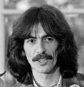
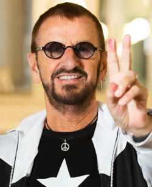

George Harrison[nota 1] MBE (Liverpool, 25 de fevereiro de 1943 – Los Angeles, 29 de novembro de 2001) foi um guitarrista, cantor, compositor, produtor musical e cinematográfico britânico que obteve fama internacional como guitarrista dos Beatles. Geralmente chamado de "o Beatle quieto", Harrison aderiu ao hinduísmo e ajudou a ampliar os horizontes dos outros Beatles assim como seu público ocidental ao incorporar instrumentos indianos na música do grupo.
Richard Starkey Kt, MBE (Liverpool, 7 de julho de 1940), mais conhecido pelo seu nome artístico Ringo Starr, é um músico, compositor e ator britânico, que ganhou fama como baterista dos Beatles. Além de atuar como baterista, Starr foi intérprete de canções de sucesso dos Beatles, como "With a Little Help from My Friends", "Yellow Submarine", "Good Night" e seus covers de "Boys" e "Act Naturally". Ele também compôs e cantou "Don't Pass Me By" e "Octopus's Garden", e é creditado como co-compositor em outras, incluindo "What Goes On".
